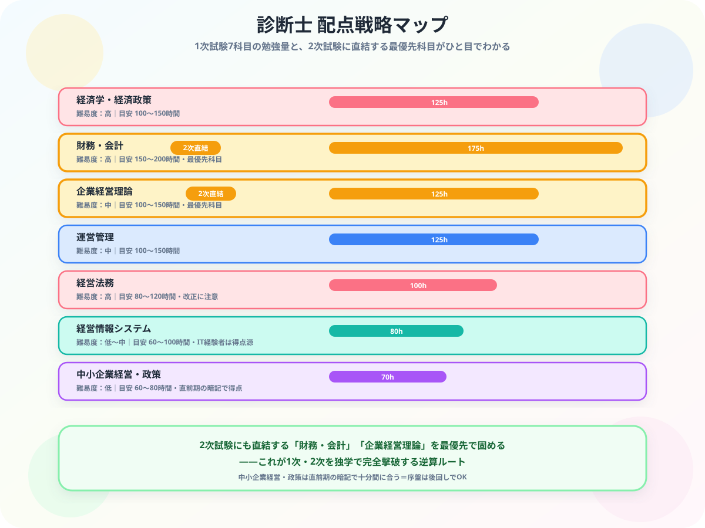

中小企業診断士 独学合格ガイド【2026年版】勉強時間・テキスト選び
こんにちは、大谷です！
「最強のビジネススキルを身につけよう！」と中小企業診断士のテキストを開いた瞬間……「うわっ、なんじゃこりゃ……経済学に財務、法文にITまで、7科目も範囲広すぎて頭爆発するわ！合格まで1,000時間以上とか正気か！？」とフリーズしていませんか？（お気持ち、めちゃくちゃ分かります笑）
僕は公認会計士を目指して毎日財務や経営理論（管理会計など）と格闘していますが、診断士で出題される財務・会計や2次記述式は、コツさえ掴めば得点を量産できる最高の脳トレパズルに化けます。
今回は、僕が難関資格の学習で培った逆算の視点をベースに、2次試験にも直結する「財務・会計」と「企業経営理論」を最優先で陥落させ、独学で1次・2次試験を完全撃破する「無敵の攻略ルート」を優しくナビゲートします。
また、モチベ維持のために、記事の末尾のほうにある【いいねボタン】をポチッと押してもらえると、めちゃくちゃ嬉しいです！
試験の基本情報
| 項目 | 内容 |
|---|---|
| 試験方式 | 1次：マークシート（7科目）｜2次：記述式（4事例） |
| 1次試験合格率 | 約20〜30% |
| 2次試験合格率 | 約20% |
| 最終合格率 | 約4〜5% |
| 必要勉強時間 | 1,000〜1,500時間（1次＋2次合計） |
| 試験時期 | 1次：8月｜2次筆記：10月｜2次口述：12月 |
1次試験の7科目

| 科目 | 難易度 | 勉強量の目安 | 特徴 |
|---|---|---|---|
| 経済学・経済政策 | 高 | 100〜150時間 | ミクロ・マクロ経済学。毎年難易度が変動 |
| 財務・会計 | 高 | 150〜200時間 | 計算問題が多く習熟に時間がかかる。2次試験にも直結 |
| 企業経営理論 | 中 | 100〜150時間 | 経営戦略・組織論・マーケティング。2次試験にも直結 |
| 運営管理 | 中 | 100〜150時間 | 生産管理・店舗管理。覚える量が多い |
| 経営法務 | 高 | 80〜120時間 | 会社法・知的財産権。改正に注意 |
| 経営情報システム | 低〜中 | 60〜100時間 | IT知識がある人は有利。得点源にしやすい |
| 中小企業経営・政策 | 低 | 60〜80時間 | 直前期の暗記で得点可能。白書からの出題が多い |
2次試験の4事例
| 事例 | テーマ | 関連1次科目 |
|---|---|---|
| 事例I | 組織・人事 | 企業経営理論 |
| 事例II | マーケティング・流通 | 企業経営理論・運営管理 |
| 事例III | 生産・技術 | 運営管理 |
| 事例IV | 財務・会計 | 財務・会計 |
記述式の2次試験は、模範解答の丸暗記では1点ももらえません。攻略のコツは、自分がコンサルギルドの賢者（アドバイザー）になったつもりで、問題文（与件文）に書かれている【社長のリアルな悩み、会社の強み、弱み】という「パーツ」を正確に抜き出し、与件文の言葉を武器にして指定文字数のハコにドッキングさせることです。この与件文ベースのハック手順さえ覚えれば、採点官をハッと納得させる完璧なコンサル答案がパズル感覚で書けるようになりますよ！
独学スケジュール（1次：12ヶ月、2次：3ヶ月プラン）
| 時期 | 内容 | 1日の目安 |
|---|---|---|
| 1〜3ヶ月目 | 財務・会計 + 企業経営理論のテキスト精読 | 2〜3時間 |
| 4〜6ヶ月目 | 経済学・運営管理・経営法務のインプット | 2〜3時間 |
| 7〜9ヶ月目 | 全科目の過去問演習（直近5年分） | 3時間 |
| 10〜12ヶ月目 | 模擬試験・弱点補強・中小企業経営・政策の暗記 | 3時間 |
| 1次合格後（3ヶ月） | 2次過去問4事例×5年分・解答プロセスの習得 | 3〜4時間 |
おすすめ教材
1次試験
- スピードテキスト（TAC出版）：1次試験の定番テキスト。全7科目が揃っており、受験校のノウハウが詰まっている。
- 過去問完全マスター（同友館）：1次試験の過去問を科目別・論点別に整理した実力養成の定番。
- 中小企業診断士試験ドットコム（無料サイト）：過去問をWeb上で演習できる。スキマ時間に最適。
2次試験
- ふぞろいな合格答案（同友館）：受験生の再現答案を分析した2次試験のバイブル。合格者の解答パターンを学べる。
- 事例問題攻略マスター（TAC出版）：事例別の解答プロセスを体系的に学べる。
まとめ
- 中小企業診断士の独学に必要な勉強時間は1,000〜1,500時間
- 1次試験（8月）→ 2次試験（10月）の年1回サイクルで計画を立てる
- 財務・会計と企業経営理論を最優先で固める
- 2次試験は与件文ベースの記述が鉄則。過去問の解答プロセスを習得する
- 1,000時間超の長期戦になるため、毎日の学習記録で継続モチベーションを維持する
経営は「なんじゃこりゃ」から「経営者の視点」に変わる最高の学問です
7科目の広さに最初は面食らっても、財務・会計と企業経営理論を軸に据え、与件文から答案を組み立てる型が身につけば、1次も2次もパズル感覚で攻略できます。この記事が「あ、そういうことか！」につながったら、僕の執筆のモチベーション維持のために、この下にある【いいねボタン】をポチッと押してもらえると、めちゃくちゃ嬉しいです！
Study Questで毎日の学習時間を記録して、1,000時間超の長期戦を一緒に走り抜きましょう！